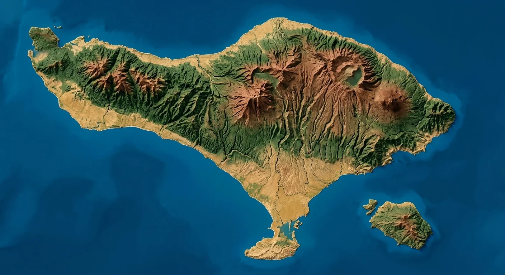

Sembilan zona, orientasi Gumi Bali.
Tata pekarangan tradisional Bali (Sanga Mandala) bertumpu pada perpotongan sumbu ritual gunung–laut dan sumbu edaran matahari. Gunakan ilustrasi peta di bawah untuk membaca arah Kaja, lalu amati perubahan posisi sembilan zona pada denah interaktif.
Orientasi Kosmologis & Denah Sanga Mandala
Dalam skema ini, Kaja mengarah ke gunung dan Kelod ke laut. Pilih wilayah pada peta Pulau Bali di bawah untuk membandingkan sumbu Kaja–Kelod, lalu amati bagaimana sembilan zona pekarangan (Sanga Mandala) dan wujud bangunannya langsung menyesuaikan diri.

Ilustrasi peta untuk pembelajaran; bukan peta navigasi atau acuan topografi.